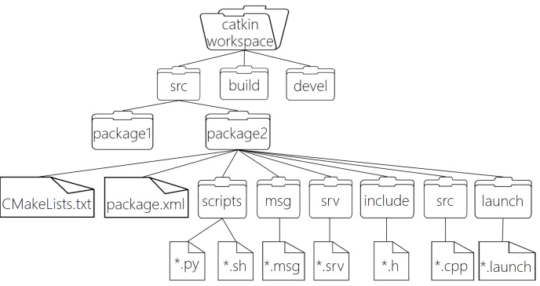

3.2 ROS 文件系统与组织结构
3.2.1 ROS 文件系统概览
与普通 C/C++ 工程不同，ROS 对代码的组织方式有明确规范：
- 所有代码必须位于 工作空间（workspace）
- 所有功能必须封装为 功能包（package）
这种结构化设计使 ROS 项目具备良好的可维护性和可复用性。
3.2.2 工作空间（Workspace）结构
以 catkin 工作空间为例，其基本结构如下：
catkin_ws/
├── src/
├── build/
├── devel/
各目录含义：
src：存放所有 ROS 功能包/源码build：编译过程中生成的中间文件devel：开发阶段生成的环境配置文件，包括头文件、动态&静态链接库、可执行文件等。
ROS 通过 setup.bash 将工作空间加入系统环境。

WorkSpace --- 自定义的工作空间
|--- build:编译空间，用于存放 CMake 与 catkin 生成的缓存、配置文件以及各类中间编译文件
|--- devel:开发空间，保存编译后生成的结果文件，包括头文件、库文件（动态库 / 静态库）以及可执行程序，同时包含用于配置开发环境的脚本
|--- src: 源码空间，所有 ROS 功能包必须存放在该目录下
|-- package：功能包(ROS基本单元)包含多个节点、库与配置文件，包名所有字母小写，只能由字母、数字与下划线组成
|-- CMakeLists.txt 功能包的编译规则配置文件，用于指定源文件、依赖关系以及生成目标
|-- package.xml 功能包描述文件，记录包名、版本、作者及依赖信息
|-- scripts 存放 Python 节点脚本文件
|-- src 存放 C++ 源代码文件
|-- include 存放功能包对应的头文件
|-- msg 自定义消息（Message）类型文件
|-- srv 自定义服务（Service）类型文件
|-- action 自定义动作（Action）通信格式文件
|-- launch 启动文件目录，用于一次性启动多个节点
|-- config 参数与配置文件目录
|-- CMakeLists.txt: 功能包的编译规则配置文件，用于指定源文件、依赖关系以及生成目标